Un regard graphique
Je cherche l'idée qui donne du caractère au projet, puis je travaille les formes, les images et les mots pour la rendre lisible.
La preuve : les dessins →Designer graphique & illustrateur — Martigny
D'abord, un trait.
Puis tout un monde.
Je crée des identités, des images et des expériences digitales. Du premier croquis à la réalisation, j'aime donner aux idées une forme qui leur appartient.
À la recherche d'une équipe à rejoindre, en Valais ou en Suisse romande.
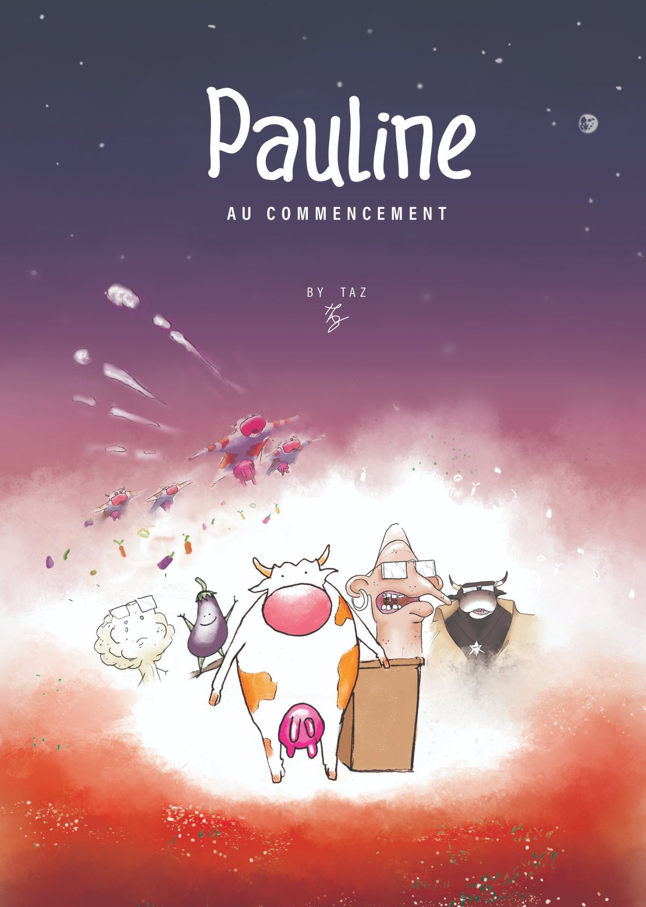
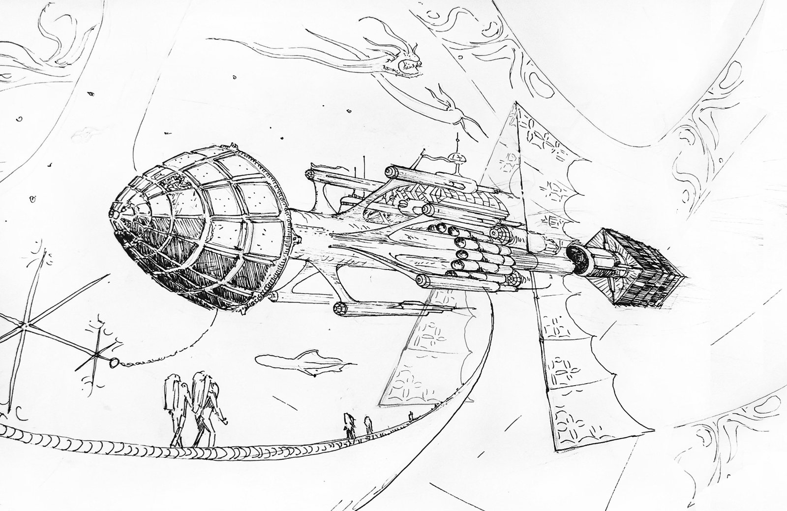
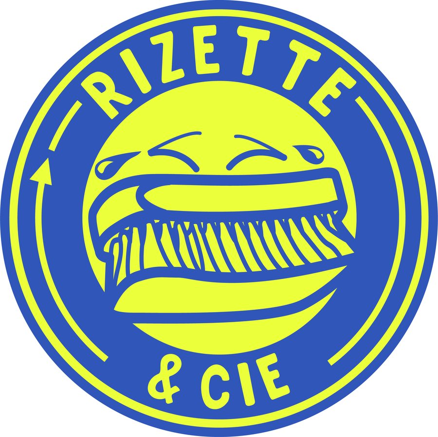
Une identité, un livre, un site : chaque projet commence par une question et prend forme à travers des choix. Voici une sélection de réalisations et de ce qui les a fait naître.
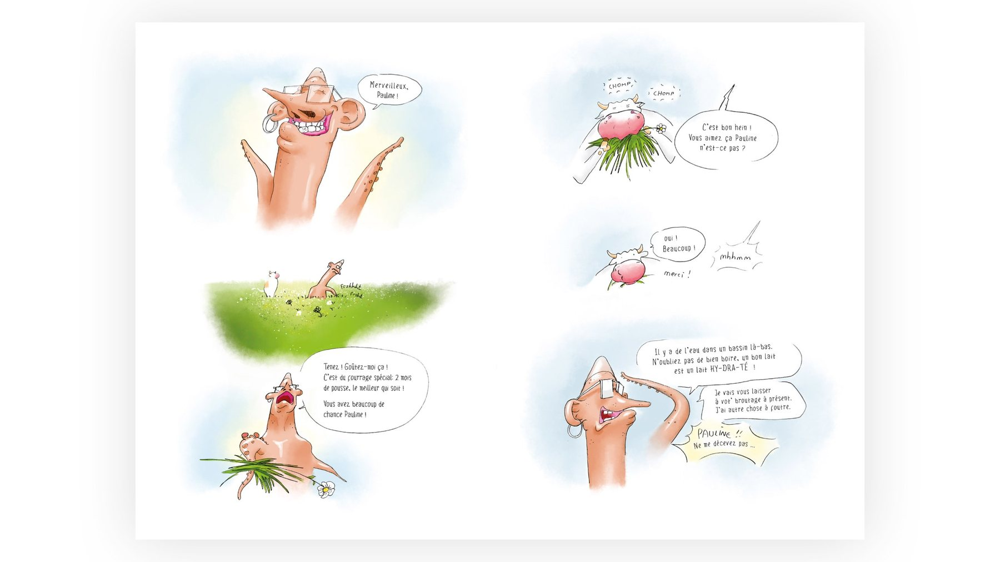
Une BD drôle et grinçante, menée seul de bout en bout : dessin, scénario, mise en page, édition et diffusion. Du premier dessin aux pages en couleur →
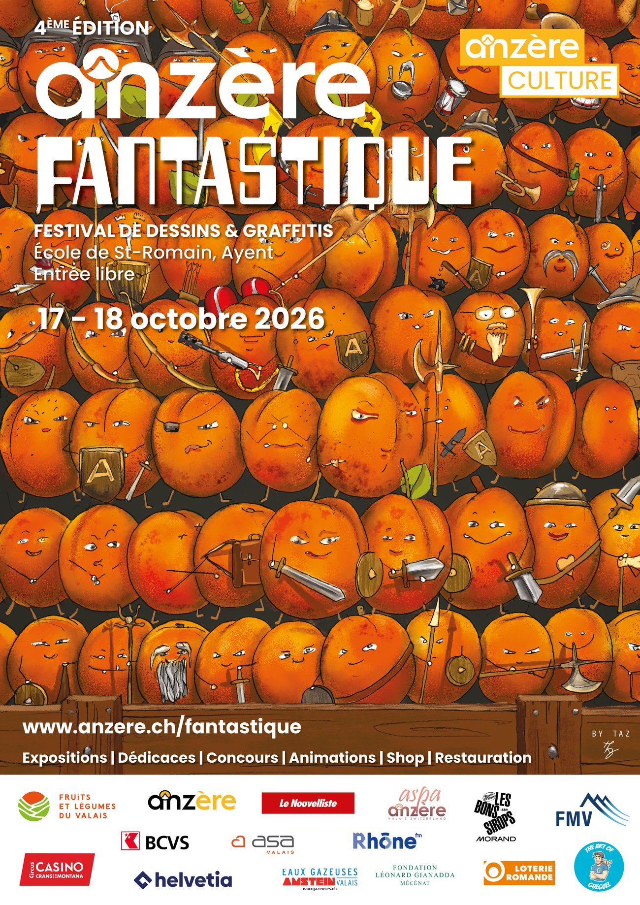
L'affiche de la 4ᵉ édition du festival de dessins & graffitis, et ma participation en tant qu'auteur : une armée d'abricots du Valais, dessinée fruit par fruit. Voir la vidéo →
Illustration · Système génératif · 2023Bustes grecs puis créatures Nautilus : deux collections dessinées à la main, plus d'un million de combinaisons. Lire l'histoire →
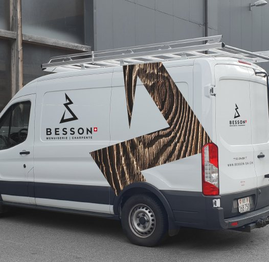
Des logos en grand, leurs déclinaisons et leurs planches de recherche — ici la menuiserie Besson, du signe au fourgon. Voir les logos →
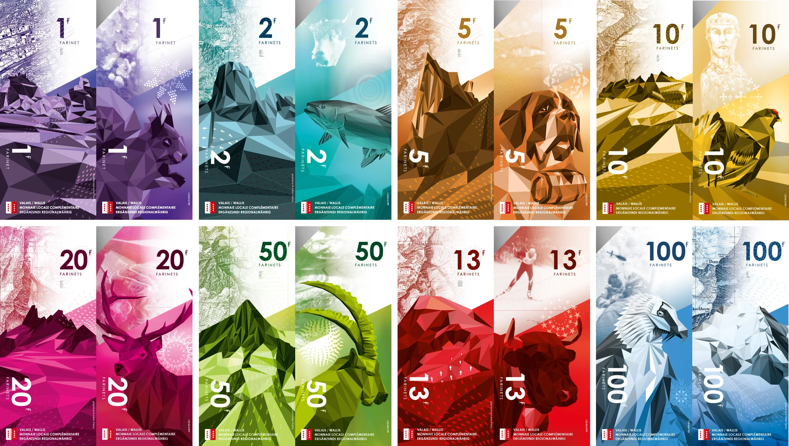
Huit coupures pour la monnaie locale du Valais, nommée d’après le faux-monnayeur Farinet. Exposées au Musée de la fausse monnaie à Saillon. Voir les billets à la loupe →

Une seule illustration, de l’esquisse au livret complet, et les photos des séances en studio. Voir l’évolution du dessin →
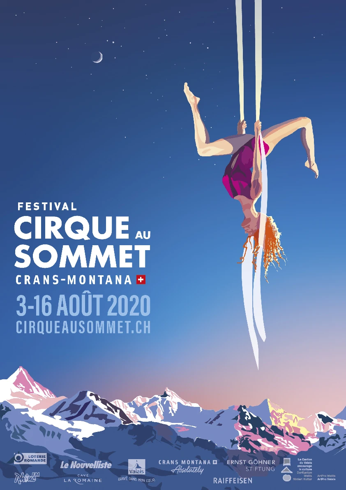
Une acrobate au-dessus des Alpes, dessinée en vectoriel. Voir le dessin en vidéo →
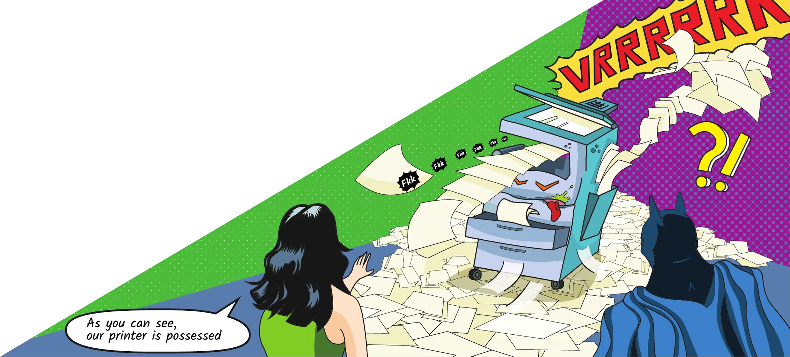
Une bande dessinée de douze cases à l’échelle d’un coworking lausannois, du crayon au mur. Lire la BD →
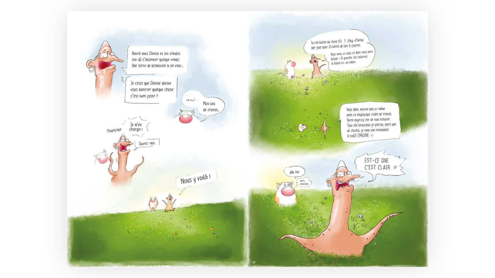
Une bande dessinée indépendante, née d'une envie simple : raconter une histoire drôle, piquante et profondément humaine — celle de Pauline, une vache face au monde du travail. Un miroir tendre et parfois grinçant de ce que nous vivons tous.
Auteur complet. Scénario, dessin, encrage et couleur, lettrage, mise en page, direction d'édition, fabrication, site internet, communication et vente. 2025 — aujourd'hui.
Faire porter des questions sérieuses — le travail, la rentabilité, la liberté — par un casting absurde et attachant, pour qu'on les avale « comme une lecture de juste 5 minutes »… qu'on finit d'une traite.
Un livre publié et diffusé en Suisse romande, accompagné de son site de vente et de sa communication — l'objet, et tout ce qui lui permet d'exister.
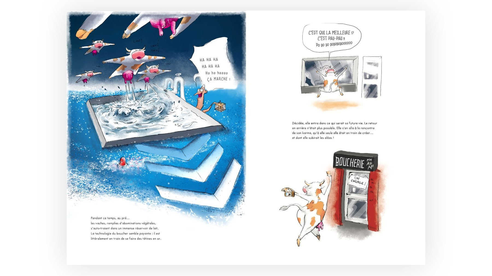
Des croquis, des recherches, des pistes abandonnées et quelques idées qui ont trouvé leur chemin.
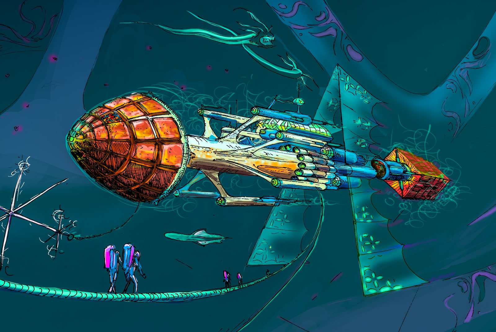
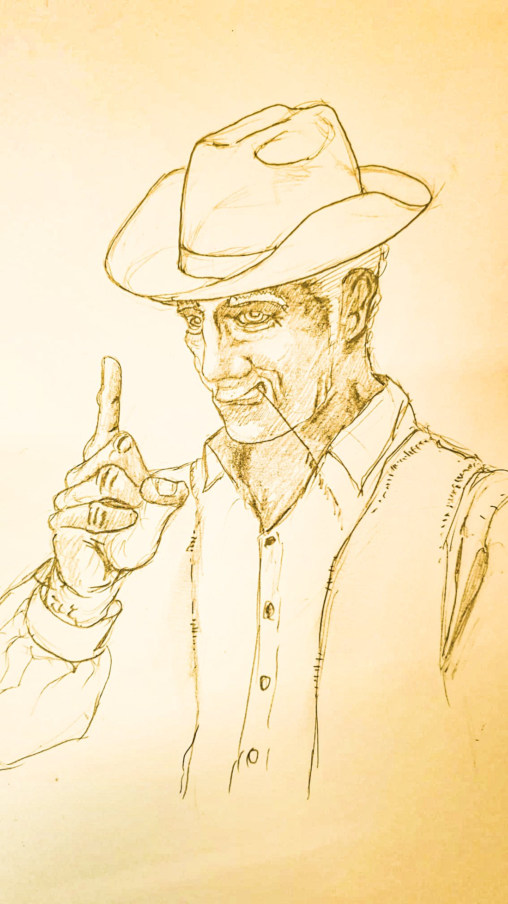
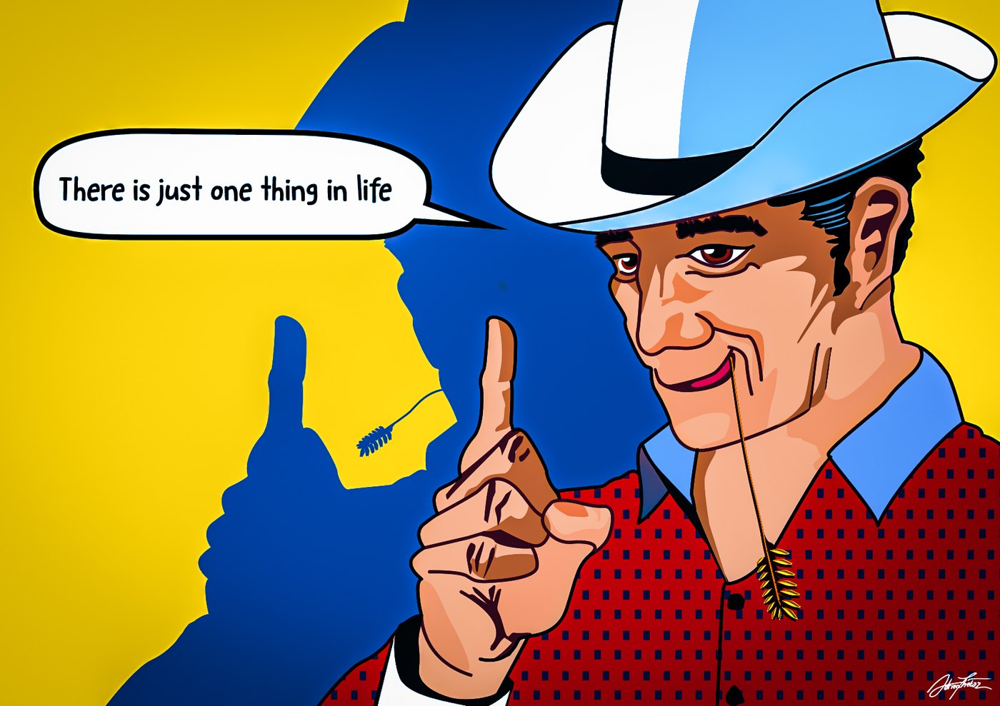
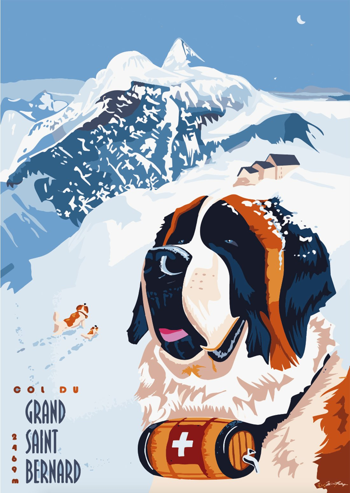
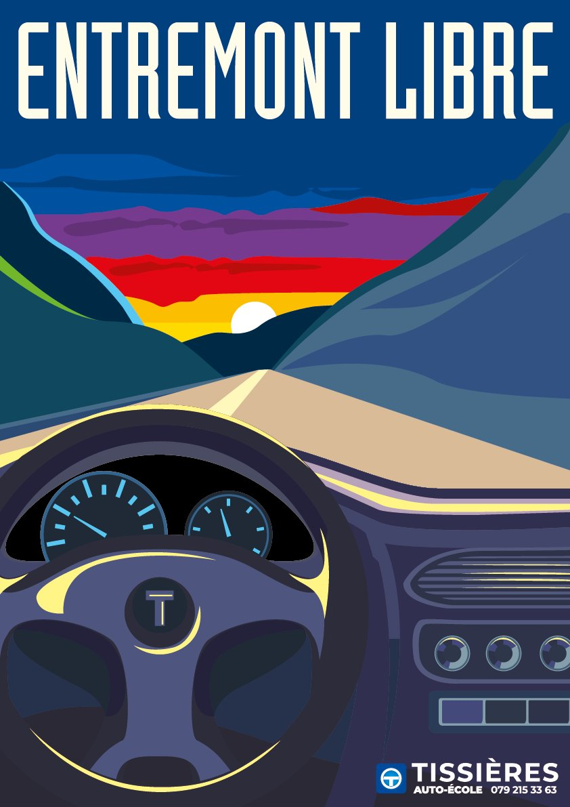
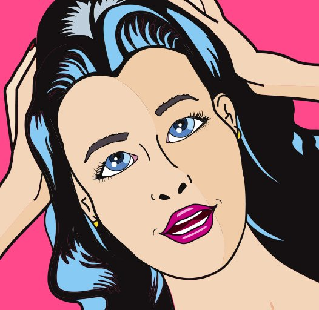
Je cherche l'idée qui donne du caractère au projet, puis je travaille les formes, les images et les mots pour la rendre lisible.
La preuve : les dessins →Je passe volontiers de la recherche aux supports concrets : identité, édition, illustration, contenus et interfaces.
La preuve : Pauline, menée de A à Z →Mon expérience du design, de la communication et de projets entrepreneuriaux m'aide à relier l'intention créative aux contraintes de production.
La preuve : le parcours →Formé en graphisme (designer MPA, EDHEA) puis en marketing & communication d'entreprise (CEFCO), j'ai travaillé pour des marques internationales, en agence et pour des PME, avant de fonder mes propres projets. Ils m'ont appris à imaginer, produire et faire avancer les choses. Aujourd'hui, j'ai envie de mettre cette énergie au service d'une équipe, dans la durée.
Je cherche une équipe avec laquelle créer des choses utiles, singulières et bien faites. Si mon travail fait écho à vos projets, parlons-en.
Également disponible pour des collaborations ponctuelles — identité, illustration, web.